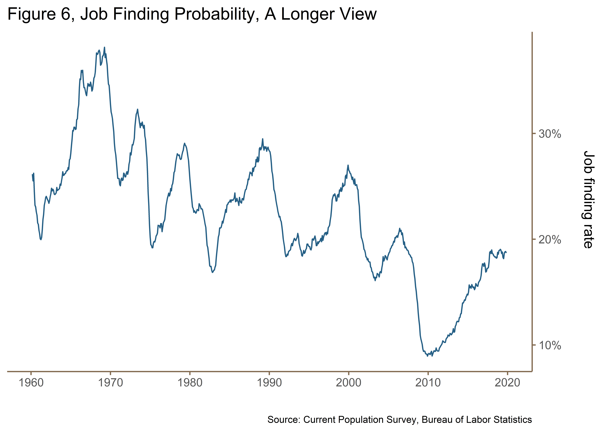

Estimation of the job finding probability comes from a line of research in the so-called “Search-Theoretic” approach to unemployment and duration analysis . Duration analysis has its origins in survival analysis, a branch of statistics for analyzing the expected duration of time until one or more events happen, such as death in biological organisms and failure in mechanical systems . It involves the modeling of time to event data; in our context, finding a job or becoming unemployed is considered an “event.” Since in the social sciences, we are interested in any situation where an individual or family, or firm, and so on begins in an initial state and is either observed to exit the state or is censored.
Duration analysis typically begins by specifying a population distribution for the duration, usually conditional on some explanatory variables observed at the beginning of the duration. For example, for the population of people who became unemployed during a particular period, we might observe education levels, experience, marital status-all measured when the person becomes unemployed-wage on prior job, and a measure of unemployment benefits. Then we specify a distribution for the unemployment duration conditional on the explanatory variables. Any reasonable distribution reflects the fact that an unemployment duration is non-negative. Once a complete conditional distribution has been specified, maximum likelihood methods are used to estimate the expected duration.
The hazard function allows us to approximate the probability of exiting the initial state within a short interval, conditional on having survived up to the starting time of the interval. In econometric applications, hazard functions are usually conditional on some covariates.
The survival function \(S(t)\), is the probability that a subject survives or in this case endures longer than time \(t\). If time is continuous with a cumulative distribution function (cdf) \(F(t)\) then the survival function is \[\begin{equation} \begin{gathered} S(t) = \mathrm{P}(\{T > t\}) = \int\limits_{t}^{\infty} f(u)\, du \\[8pt] = 1 - F(t) \end{gathered} \end{equation}\] and this is the probability of “surviving” past time \(t\). The density of \(T\) can be denoted \[ f(t) = \frac{\partial F}{\partial t}(t) \] The probability that a person who has occupied a state for time \(t\) leaves it in some short interval \(h\) after \(t\) is given by, \[ \mathrm{P}(t \leq T < t + h \; | \; T \geq t) \] The hazard or “exit” function is then, \[\begin{equation} \lambda(t) = \lim_{h \;|\, 0} \frac{\mathrm{P}(t \leq T < t + h \; | \; T \geq t)}{h} \end{equation}\]
For each \(t\), \(\lambda(t)\) is the instantaneous rate of leaving per unit of time.
A rough interpretation of \(\lambda(t)\) is that it presents the probability of exit from a state in the short interval \(h\) after \(t\), conditional on the state being occupied at \(t\). Put another way, the hazard function gives the probability that a person unemployed for 10 weeks (\(\lambda(10)\)) will find employment (exit unemployment), whereas the unconditional probability provides the chances that a person will get job at the tenth week of unemployment. That is \(\lambda(10)\) gives the probability that a person will find a job between weeks 10 and 11, conditional on being unemployed through week 10.
We can express the hazard function and the unconditional probability of exit in terms of the distribution and the probability density function (pdf) of \(T\), which is considered to be a continuous random variable. By the law of conditional probability,
\[\begin{equation} \begin{gathered} \frac{\mathrm{P}(t \leq T < t + h \; | \; T \geq t)}{\mathrm{P}(T \geq t)} \\[8pt] = \frac{F(t + h) - F(t)}{1 - F(t)} \end{gathered} \end{equation}\]
When the cdf is differentiable, we can take the limit of the right-hand side, divided by \(h\), as \(h\) approaches zero:
\[\begin{equation} \begin{gathered} \lambda(t) = \lim_{h \to 0} \frac{F(t + h) - F(t)}{h}\cdot \frac{1}{1 - F(t)} \\[8pt] = \frac{\partial F}{\partial t}F(t) \cdot \frac{1}{1 - F(t)} \\[8pt] = \frac{f(t)}{1 - F(t)} \\[8pt] = \frac{f(t)}{S(t)} \end{gathered} \end{equation}\]
Because the first derivative of \(S(t)\) is \(-f(t)\) we can also express the hazard function as
\[\begin{equation} \lambda(t) = - \frac{\partial \ln S(t)}{\partial t} \end{equation}\]
Equation (5) is a differential equation in \(t\), whose solution, subject to the initial condition \(F(0) = 0\) we arrive through integration
\[\begin{equation} F(t) = 1 - \exp\left[\int\limits_{0}^{t}\,\lambda(s)\,ds \right], \quad t \geq 0 \end{equation}\]
differentiation of equation (6) gives the density of \(T\) as
\[\begin{equation} f(t) = \lambda(t)\exp\left[\int\limits_{0}^{t}\,\lambda(s)\,ds \right], \end{equation}\]
The shape of the hazard function is important in many empirical aspects and in the simplest case it is constant \(\lambda(t) = \lambda\). This function means that the process driving \(T\) is memoryless: the probability of exit in the next interval does not depend on how much time has been spent in the initial state. A constant hazard implies
\[ F(t) = 1 - e^{-\lambda t} \]
When the hazard function is not constant, the process exhibits duration dependence . Assuming that \(\lambda(t)\) is differentiable, there is positive duration dependence at time \(t\) if \(\partial\lambda(t)/\partial t > 0\), then the process exhibits positive duration dependence. Positive duration dependence means simply that the probability of exiting the initial state increases the longer one is in the initial state. If the derivative is negative, however, then there is negative duration dependence; longer spells in the initial decreases the probability of exit.
argue that movements in the job finding probability accounted for about 65 percent of unemployment fluctuations prior to the last two recessions, and more in 1990–1991 and 2001. claim a more substantial role for the hazard rate to unemployment (separation rate) but still find that the job finding probability accounts for at least half of the fluctuations in unemployment.
Following the approach of , we can roughly approximate the hazard rate (job finding probability) as
\[\begin{equation} F_{t} = 1 - \frac{u_{t} - s_{t}}{u_{t-1}} \end{equation}\]
which expresses the monthly outflow finding probability as a function of the total unemployment level \(u_{t}\) at time \(t\) and short term unemployment \(s_{t}\), defined as those unemployed for less than five weeks.
Shimer’s method extended by shows that the monthly outflow hazard rate, \(f(t)\) can be transformed from (8) into a continuous-time outflow hazard as,
\[\begin{equation} f_{t} = - \ln(1 - F_{t}) \end{equation}\]
Calculating this measure from BLS aggregate unemployment duration flows allows us to look at a longer view of the job finding probability.

argues that fluctuations in the unemployment rate are mostly explained by fluctuations in job finding rates or transitions out of unemployment (“Outs”) rather than by fluctuations in job separation rates or transition into unemployment (“Ins”). This implies that the unemployment rate fluctuates over the business cycle not because workers lose their jobs but because workers have a hard time finding a job.
The declining job finding probability is worrying for a number of reasons. A large literature documents that a particular type of long-term unemployment - those resulting from job losses during mass layoffs - leave a very persistent “scarring” effect on the future earnings of displaced workers. Future earnings of people who experienced prolonged spells of unemployment decline by as much as 20 percent . A more recent study by finds that the loss is potentially larger at around 35-40 percent. Furthermore, due to negative duration dependence, the probability of receiving a callback for an interview significantly decreases with the length of a worker’s unemployment spell, with the majority of this decline occurring during the first eight months . In short, what economists call “negative duration dependence” undermines the functioning of the labor market and generates large social costs.
The unusual nature of the COVID-19 recession makes it difficult to draw on experiences from past recessions to project how the labor market will evolve in the months ahead. For example, during the Great Recession, the initial wave of layoffs was subsequently followed by a prolonged period of lower job finding rates . This led to a significant increase in the long-term unemployment share, which in turn prolonged the recession through negative duration dependence . Currently available data suggest that the dynamics of the COVID-19 recession may play out quite differently. Looking more closely at the last two decades in Figure 8 we see that job finding rates have not decreased as substantially as they did in the Great Recession.
The pandemic is an urgent reminder of what long-term labor trends have been illustrating for years: low-wage workers need better pathways into decent jobs, and from shrinking occupations to the jobs of tomorrow. Policymakers face a dual imperative: to facilitate safe reemployment as soon as possible, even as COVID-19 continues to surge in many parts of the country, while also helping low-wage workers on the journey to jobs with dignity, stability, and a fair shot at economic mobility. While the risk of mass unemployment has already spurred large public expenditures, more funding and efforts are needed to ensure opportunity reaches those who need it the most.
We produce forecasts using a collection of traditional and non-traditional time series methods. This section provides a general overview of the methods used, their benefits, and their limitations. It cannot be emphasized enough that, no matter the strength of a model, it remains exactly that: a model. As such, all statistical models are “wrong.” No matter the method used, any model is an attempt to reproduce (“model”) the true data generating process of a data series.
For many familiar with the methodology of time series forecasting, this section presents a brief recapitulation of basic concepts which can be found in any standard textbook such as or . For a more advanced treatment, one should see or .
Time series analysis is the procedure of using known data values to fit a time series with a suitable model and estimation of the corresponding parameters. It comprises methods that attempt to understand the nature of the time series.
A major assumption that often provides relief in modeling efforts is the linearity assumption. A linear filter, for example, is a linear operation from one time series \(x_{t}\) to another time series \(y_{t}\).
\[\begin{equation} E[y_{t}] = L(x_{t}) = A(L^{i})\epsilon_{t} = \left(\sum\limits_{-\infty}^{\infty} \psi_{i}L^{i}\right)\epsilon_{t} = \mu + \sum\limits_{-\infty}^{\infty}\psi_{i}\epsilon_{t-i}, \end{equation}\]
where \(\epsilon \sim \mathcal{N}(0, \sigma^{2})\) and \(L^{i}\) is the Lag or Backshift Operator defined as,
\[ L^{i}x_{t} = x_{t-i} \; \forall \, i \in \mathbb{N} \]
the linear filter can be seen as a process that converts the input, \(x_{t}\), into an output, \(y_{t}\) with a conversion process that involves all (present, past, and future) values of the input in the form of a summation with different “weights,” \(\psi_{i}\), on each observation \(x_{i}\). Specifically, \(y_{t}\) can be expressed as
\[ y_{t} = \mu + \sum\limits_{i= o}^{\infty}\psi_{i}\epsilon_{t-i} \]
where the weights are conventionally some form of moving average \(M\). A moving average \(M\) of span \(N\) assigns weights \(\frac{1}{N}\) to the most recent observations such that the estimate can be written as
\[ M_{t} = \frac{1}{N} \sum\limits_{t = T - N - 1}^{N} y_{t} \]
The covariance between \(y_{t}\) and its value at another point in time \(y_{t + k}\) is called the auto-covariance at lag \(k\), and is defined by
\[ \gamma_{k} = \mathrm{Cov}(y_{t}, y_{t+k}) = E\left[(y_{t} - \mu)(y_{t+k} - \mu)\right] \]
the autocovariance of the series at lag \(k = 0\) is simply the variance of the time series. The autocorrelation coefficient at \(k\) is then
\[\begin{gather*} \rho_{k} = \frac{E[(y_{t} - \mu)(y_{t+k} -\mu)]}{\sqrt{E[(y_{t} - \mu)^{2}]E[(y_{t+k} - \mu)^{2}]}} \\[8pt] = \frac{\mathrm{Cov}(y_{t}, y_{t+k})}{\mathrm{Var}(y_{t})}\\[8pt] = \frac{\gamma_{k}}{\gamma_{0}} \end{gather*}\]
The collection of these values \(\rho_{k}\) is called the autocorrelation function. For a finite time series, it is necessary to estimate the autocovariance and autocorrelation functions. A usual estimate of the autorcovariance function is
\[ c_{k} = \hat{\gamma_{k}} = \frac{1}{T} \sum\limits_{t = 1}^{T-k}(y_{t} -\bar{y})(y_{t+k} - \bar{y}), \quad k = 1, 2, 3,\, \ldots,\, K \] and the autocorrelation function is estimated by the sample autocorrelation function (sample ACF) \[ r_{k} = \hat{\rho_{k}} = \frac{c_{k}}{c_{o}} \] The stationarity of a time series is related to its statistical properties in time. That is, in the more strict sense, a stationary time series exhibits similar “statistical behavior” in time and this is often characterized as a constant probability distribution in time. However, it is usually satisfactory to consider the first two moments of the time series and define stationarity (or weak stationarity) as follows: (1) the expected value of the time series does not depend on time and (2) the autocovariance function defined as \(\mathrm{Cov}(y_{t}, y_{t+k})\) for any lag \(k\) is only a function of \(k\) and not time: that is, \(y(k) = \mathrm{Cov}(y_{t}, y_{t+k})\). Weak stationarity, then, implies that the mean of the series does not change with time \(t\) and that the autocovariance function, \(\gamma(k, t)\), depends on \(k\) and \(t\) only through their difference \(k - t\).
For a time-invariant and stable linear filter a stationary input time series \(y(t)\) can be written more succinctly as,
\[\begin{gather*} y(t) = \mu + \sum\limits_{i= 0}^{\infty}\psi_{i}\epsilon_{t} \\[8pt] \mu + \sum\limits_{i=0}^{\infty}\psi_{i}L^{i}\epsilon_{t} \\[8pt] \mu + \Psi(L)\epsilon_{t} \end{gather*}\]
where \[
\Psi(L)\epsilon_{t} = \sum\limits_{i=0}^{\infty}\psi_{i}L^{i}
\]
The infinite moving average model has a covariance function in the form,
\[ \mathrm{Cov}(y_{t}, y_{t+k}) = \gamma_{y}(k, t) = \sum\limits_{i = -\infty}^{\infty}\sum\limits_{j = - \infty}^{\infty}\psi_{i}\psi_{j}\gamma_{x}(i - j + k) \]
The autocovariance function of \(y_{t}\) is then,
\[\begin{gather*} \gamma_{y}(k, t) = \sum\limits_{i = o}^{\infty}\sum^{\infty}\limits_{j = 0} \psi_{i}\psi_{j}\gamma_{\epsilon}(i-j+k) \\[8pt] = \sigma^{2}\sum\limits_{i = 0}^{\infty}\psi_{i}\psi_{i + k} \end{gather*}\]
This representation comes from a theorem by Wold and which essentially states that any nondeterministic weakly stationary time series \(y_{t}\) can be represented as in the above manner. A more intuitive interpretation of this theorem is that a stationary time series can be seen as the weighted sum of the present and past random “disturbances.”
Although very powerful in providing a general representation of any stationary time series, the infinite moving average model given in is not very useful in practice except for certain special cases.
In finite order moving average or MA models, weights that are not set to 0 are represented by the Greek letter \(\theta\) with a minus sign in front.
\[\begin{gather*} y_{t} = \mu + \left(1 - \sum\limits_{i=1}^{q}\theta_{i}L^{i} \right)\epsilon_{i}\\[8pt] = \mu + \Theta(L)\epsilon_{t} \end{gather*}\]
where \(\Theta(L)\epsilon_{t} = 1 - \sum\limits_{i=1}^{q}\theta_{i}L^{i}\)
An interpretation of the finite order MA processes is that at any given time, of the infinitely many past disturbances, only a finite number of the disturbances “contribute” to the current value of the time series and that the time window of the contributors “moves” in time, making the “oldest” disturbance obsolete for the next observation. It is indeed not too far fetched to think that some processes might have these intrinsic dynamics. However, for some others, we may be required to consider the “lingering” contributions of the disturbances that happened back in the past. This will of course bring us back to square one in terms of our efforts in estimating infinitely many weights. Another solution to this problem is through autoregressive models in which the infinitely many weights are assumed to follow a distinct pattern and can be successfully represented with only a handful of parameters. We shall now consider some special cases of autoregressive processes.
Autoregressive models are based on the idea that current value of the series, \(x_{t}\) can be explained as a linear combination of past values, \(x_{t-1}, x_{t-2}, \ldots, \, x_{t-p}\), together with some random error \(\epsilon\). In other words, a series \(x_{t}\) is linearly dependent upon its past values, the degree to which depends on the lag order \(p\).
Let us first consider again the time series
\[\begin{gather*} y(t) = \mu + \sum\limits_{i= 0}^{\infty}\psi_{i}\epsilon_{t} \\[8pt] \mu + \sum\limits_{i=0}^{\infty}\psi_{i}L^{i}\epsilon_{t} \\[8pt] \mu + \Psi(L)\epsilon_{t} \end{gather*}\]
One approach to modeling this time series is to assume that the contributions of the disturbances that are way in the past should be small compared to the more recent disturbances that the process has experienced. Since the disturbances are independently and identically distributed random variables, we can simply assume a set of infinitely many weights in descending magnitudes reflecting the diminishing magnitudes of contributions of the disturbances in the past.
A simple and yet intuitive set of such weights can be created following an exponential decay pattern. For that we will set \(\psi_{i} = \phi^{i}\), where \(\left|\,\phi\,\right| < 1\) to guarantee the exponential “decay.” In this notation, the weights on the disturbances starting from the current disturbance and going back in past will be \(1, \phi^{2}, \phi^{3},\, \ldots\)
\[\begin{gather*} y_{t} = \mu + \epsilon_{t} + \phi\epsilon_{t-1} + \phi^{2}\epsilon_{t-2} + \cdots\\[8pt] = \mu + \sum\limits_{i=0}^{\infty}\phi^{i}\epsilon_{t-i} \\[8pt] \end{gather*}\]
We also have
\[\begin{gather*} y_{t-1} = \mu + \epsilon_{t-1} + \phi\epsilon_{t-2} + \phi^{2}\epsilon_{t-3} + \cdots \\[8pt] = \mu + \phi\left(\sum\limits_{i=0}^{\infty}\phi^{i}\epsilon_{t-1-k} + \epsilon_{t}\right) \end{gather*}\]
combining these two equations together we can represent an AR(1) model as a linear process given by
\[\begin{gather*} \mu + \sum\limits_{i=0}^{\infty}\phi^{i}\epsilon_{t-i} = \mu + \phi\left(\sum\limits_{i=0}^{\infty}\phi^{i}\epsilon_{t-i} + \epsilon_{t}\right) \\[8pt] \mu + \epsilon_{t} + \sum\limits_{i=0}^{\infty}\phi^{i}y_{t-i} + \phi\mu \\[8pt] \mu - \phi\mu + \sum\limits_{i=0}^{\infty}\phi^{i}y_{t-i} + \epsilon_{t} \\[8pt] \delta + \sum\limits_{i=0}^{\infty}\phi^{i}y_{t- i} + \epsilon_{t} \end{gather*}\]
where \(\delta = (1 - \phi)\mu\). A more general way of writing an autoregressive procress is through operator notation as
\[\begin{gather*} \epsilon_{t} = \left(1 - \sum\limits_{i=1}^{i}\phi_{i}L^{i} \right)y_{t} \\[8pt] = \Phi(L)y_{t} \end{gather*}\]
where \(\Phi(L) = 1 - \sum\limits_{i=1}^{p}\phi_{i}L^{i}\)
The above process in is called a first-order autoregressive process, AR(l), because it can be seen as a regression of \(y_{t}\) on \(y_{t-1}\) and hence the term autoregressive process.
Autoregressive–moving-average (ARMA) models provide a parsimonious description of a (weakly) stationary stochastic process in terms of two polynomials, one for the autoregression (AR) and the second for the moving average (MA). The general ARMA model was described in the 1951 dissertation of Peter Whittle, Hypothesis Testing in Time Series, which generalized Wold’s autoregressive representation theorem for univariate stationary processes to multivariate processes, and was popularized in by Box and Jenkins in their classic book .
\[\begin{gather*} y_{t} = \delta + \sum\limits_{i=0}^{p}\phi^{i}y_{t- i} + \epsilon_{t} - \sum\limits_{i=1}^{q}\theta_{i}\epsilon_{i-1} \\[8pt] \Psi(L)y_{t} = \delta + \Theta(L)\epsilon_{t} \end{gather*}\]
which has an infinite moving average process \(\mathrm{MA}(q)\)
\[ y_{t} = \mu + \sum\limits_{i= o}^{\infty}\psi_{i}\epsilon_{t-i} \]
The Autoregressive Integrated Moving Average (ARIMA) model is a generalization of an Autoregressive Moving Average (ARMA) model to overcome the possible violation of the assumption that the series \(x_{t}\) is stationary. In order for inferences drawn from the estimates to be reliable when the data are not stationary, the data must be differenced some number of times \(d\) to remove seasonality and trend. If a stochastic process has to be differenced \(d\) times to reach stationarity, it is said to be integrated of order \(d\) or \(I(d)\).
A standard convention for expressing the ARIMA model is \(\mathrm{ARIMA}(p, d, q)\), where:
\(p\) denotes the number of lag observations included in the model, also called the lag order.
\(d\) denotes the number of times that the series is differenced, also called the degree of differencing.
\(q\) denotes the size of the moving average window.
We will call a time series homogeneous, non-stationary if it is not stationary but its first difference, that is, \(w_{t} = y_{t} - Y_{t-1} =(1 - L)y_{t}\),or higher-order differences, \(w_{t} =(I- L)^{d}y_{t}\) produce a stationary time series. We will further call \(y_{t}\) an autoregressive integrated moving average (\(\mathrm{ARIMA}\)) process of orders \(p\), \(d\), and \(q\) \(\mathrm{ARIMA}(p, d, q)\) if its \(d\)-th difference, denoted by \(w_{t} =(I- L)^{d}y_{t}\) produces a stationary \(\mathrm{ARMA}(p, q)\) process. The term integrated is used since, \(d = 1\), for example, we can write \(y_{t}\) as the sum (or “integral”) of the \(w_{t}\) process as
\[\begin{gather*} y_{t} = \delta + \sum\limits_{i=0}^{p}\phi^{i}y_{t- i} + \epsilon_{t} - \sum\limits_{i=1}^{q}\theta_{i}\epsilon_{i-1} \\[8pt] \left(1 - \sum\limits_{i=0}^{p}\phi^{i}L^{i}\right)y_{t} = \left(1 + \sum\limits_{i=1}^{q}\theta_{i}L^{i}\right)\epsilon_{t} \\[8pt] \left(1 - \sum\limits_{i=0}^{p}\phi^{i}L^{i}\right) = \left(1 + \sum\limits_{i=1}^{q}\theta_{i}L^{i}\right)\left(1 - L\right)^{d} \\[8pt] \left(1 - \sum\limits_{i=0}^{p}\phi^{i}L^{i}\right)\left(1 - L\right)^{d}y_{t} = \left(1 + \sum\limits_{i=1}^{q}\theta_{i}L^{i}\right)\epsilon_{t} \\[8pt] \Phi(L)(1 - L)^{d}y_{t} = \delta + \Theta(L)\epsilon_{t} \end{gather*}\]
Selection of the hyperparameters \((p, d, q)\) are often chosen through an inspection of the ACF and PACF, but can also be selected through AIC (Akaike Information Criterion), AICc (corrected AIC) and BIC (Bayesian Information Criterion). But note that the selection of the hyperparameters is not unique.
A unit root is a feature of some stochastic processes (such as random walks) that can cause problems in statistical inference involving time series models. A linear stochastic process has a unit root if 1 is a root of the process’s characteristic equation. Shocks to a unit root process have permanent effects which do not decay as they would if the process were stationary. The characteristic roots (roots of the characteristic equation) also provide qualitative information about the behavior of the variable whose evolution is described by the dynamic equation. For a differential equation parameterized on time, the variable’s evolution is stable if and only if the real part of each root is negative. For difference equations, such as a standard time series, there is stability if and only if the absolute value of each root is less than 1.
An augmented Dickey–Fuller test (ADF) tests the null hypothesis that a unit root is present in a time series sample. The alternative hypothesis is different depending on which version of the test is used, but is usually stationarity or trend-stationarity.
The intuition behind the test is that if the series is characterised by a unit root process then the lagged level of the series (\(y_{t-1}\)) will provide no relevant information in predicting the change in \(y_{t}\) besides the one obtained in the lagged changes. The OLS estimate (based on an \(n\)-observation time series) of the autocorrelation parameter \(\rho\) is given by
\[ \hat{\rho}(n) = \frac{\sum\limits_{t=1}^{n}y_{t-1}y_{t}}{\sum\limits_{t=1}^{n}y_{t}^{2}} \]
if \(\left|\rho \right| < 1\) then
\[ \sqrt{n}\left(\hat{\rho} - \rho\right) \implies \sim{N}(0, 1 - \rho^{2}) \]
To compute the test statistics, we fit the augmented Dickey–Fuller regression \[ \Delta y_{t} = \alpha + \beta y_{t-1} + \delta + \sum\limits_{j=1}^{k}\psi_{i}\Delta y_{t- i} + \epsilon_{t} \]
Depending on the specifications, the constant term \(\alpha\) or time trend \(\delta\) is omitted and \(k\) is the number of lags specified.